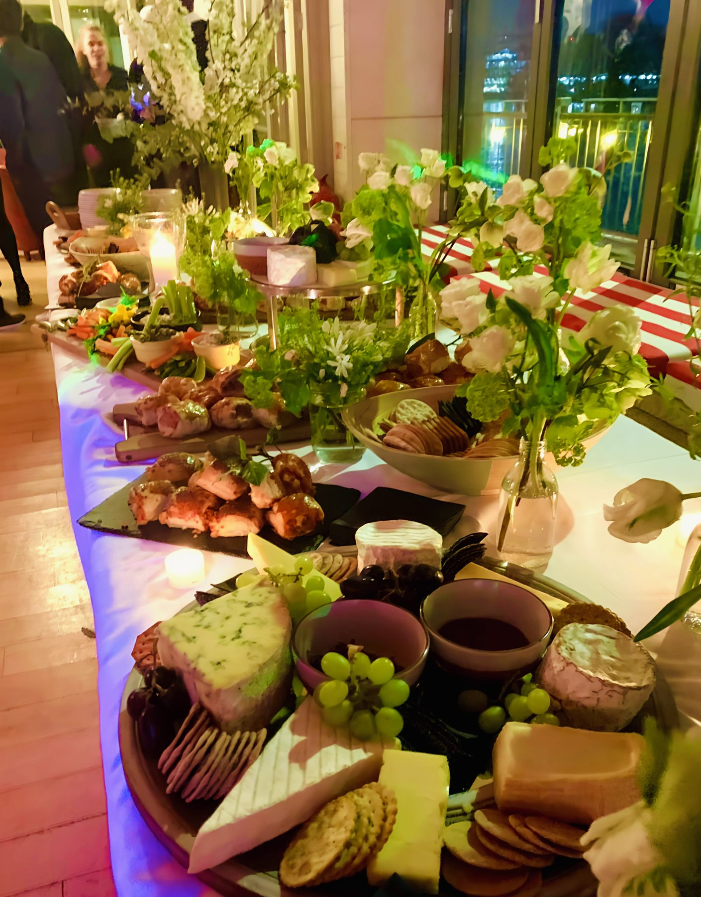

i.
Moroccan heritage
Tagines worked over hours, preserved lemon and ras el hanout cured in-house, bread baked the day it's served. Built for sharing, plated for the room.
Moroccan heritage on the plate, modern European technique in the hand — cooking built around the table you're sitting at.


Alan Snow cooks the way he grew up eating — slow-built tagines, charcoal-licked meat, bread torn straight from the pan — sharpened by years in London's European kitchens.
Every menu starts from the room it's served in, not the chef writing it. For private clients he designs the meal end-to-end: produce list, wine fit, service flow, last plate to the last guest. For larger events he brings a small, repeated crew that has worked the same way for years.
Quiet kitchen. Calm room. Based in London, available across the UK and abroad on request.
Tagines worked over hours, preserved lemon and ras el hanout cured in-house, bread baked the day it's served. Built for sharing, plated for the room.
Seasonal British produce led by what's good that week. French and Italian technique underneath; restraint on the plate; nothing on it that isn't earning its place.
Private dining, weddings, corporate suppers. End-to-end menu design and a kitchen team that runs quiet. Six guests or two hundred.

The cooking carried the room — Moroccan warmth with a London steadiness behind it.— Private client, Notting Hill, 2025
Bespoke menus in your home, with full front-of-house. Kitchen and dining room left as found.
Ceremony bites to long-table mains. Moroccan family-style, plated European, or a hybrid of both.
Investor dinners, launches, retreats. Menu, narrative and timing built around the evening's purpose.